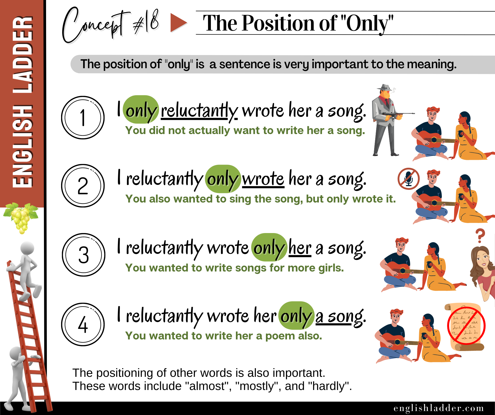

Prompt 01
I
only reluctantly
wrote her a song. (What does this imply?)
Reveal answer
It implies that you did not actually want to write her a song.
Grammar Concepts #18
This rebuilt lesson keeps the original concept image, tightens the structure, and turns the explanation into a clearer self-study guide.

The placement of the word “only” in a sentence can drastically change the meaning of the sentence. This concept is crucial for non-native English speakers to understand as it affects the emphasis and focus of the information being conveyed.
The position of modifying words like “only”, “even”, “just”, and others can significantly alter the meaning of a sentence. Understanding how to place these words correctly will help in conveying the intended message more precisely.
Focus on Context: Always consider the context of the sentence to determine the best placement of these words for clarity and emphasis.
Practice and Pay Attention: Practice with different sentences to see how moving these words changes the meaning.
Answer the quiz questions below with responses consistent with the concepts taught on the left.
I
only reluctantly
wrote her a song. (What does this imply?)
It implies that you did not actually want to write her a song.
I reluctantly
only wrote
her a song. (What does this imply?)
It implies that you wanted to sing the song as well, but you only wrote it.
I reluctantly wrote
only her
a song. (What does this imply?)
It implies that you wanted to write songs for more girls, but you wrote a song only for her.
I reluctantly wrote her
only a song
. (What does this imply?)
It implies that you wanted to write her more than just a song, like a poem, but you wrote just a song.
Even
John passed
the exam. (What does this imply?)
It implies that John, who was not expected to pass, did pass.
John
even passed
the exam. (What does this imply?)
It implies that in addition to other accomplishments, John also passed the exam.
Just
call me
when you arrive. (What does this imply?)
It implies that calling is the only action required upon arrival.
Call me
just when
you arrive. (What does this imply?)
It implies that the timing is critical; the call should be made immediately upon arrival.
Actually,
I don’t agree
. (What does this imply?)
It implies that you are correcting a previous assumption or statement.
I
actually don’t agree
. (What does this imply?)
It emphasizes your genuine disagreement.
Almost
everyone enjoyed
the party. (What does this imply?)
It implies that most people enjoyed the party, but a few did not.
Everyone
almost enjoyed
the party. (What does this imply?)
It implies that everyone was close to enjoying the party, but something was missing.
She
mostly eats
vegetables. (What does this imply?)
It implies that she eats vegetables for the most part, but not exclusively.
Mostly,
she eats
vegetables. (What does this imply?)
It implies that the majority of her diet consists of vegetables.
I
only reluctantly
signed the document. (What does this imply?)
It implies that you did not actually want to sign the document.
I reluctantly
only signed
the document. (What does this imply?)
It implies that you wanted to do more than sign the document, but you only signed it.
I reluctantly signed
only the document
. (What does this imply?)
It implies that you wanted to sign other things as well, but you signed only the document.
I reluctantly signed the document
only
. (What does this imply?)
It implies that signing the document was the only action you took.
Even
Sarah completed
the project. (What does this imply?)
It implies that Sarah, who was not expected to complete the project, did complete it.
Sarah
even completed
the project. (What does this imply?)
It implies that in addition to other accomplishments, Sarah also completed the project.
Just
tell me
the truth. (What does this imply?)
It implies that telling the truth is the only action required.
Tell me
just when
you are ready. (What does this imply?)
It implies that the timing is critical; you should tell me immediately when you are ready.
Actually,
he didn’t mean
it. (What does this imply?)
It implies that you are correcting a previous assumption or statement about his intentions.
He
actually didn’t mean
it. (What does this imply?)
It emphasizes that he genuinely did not intend what was implied.